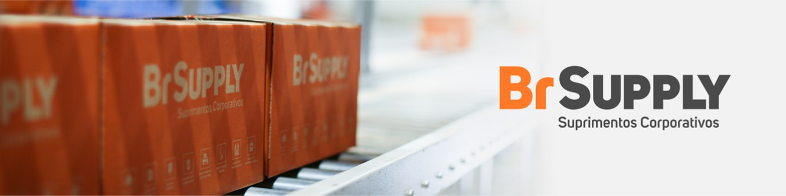

Persona (interno) + mock da página LinkedIn (banner BR Supply + foto escolhida + sobre + experiência). Seis vendedores da seleção final.
| ID | Nome | Persona | Banner |
|---|---|---|---|
| v04 | Juliana Peixoto | esp_suprimentos_indiretos | br-supply-01-caixas.jpg |
| v05 | Roberto Menezes | kam_tecnico_mro | br-supply-02-fachada.jpg |
| v06 | Daniela Hoffmann | kam_tecnico_mro | br-supply-03-logistica.jpg |
| v09 | Thiago Nascimento | inside_sales_alta_performance | br-supply-01-caixas.jpg |
| v11 | Gabriel Rocha | inside_sales_alta_performance | br-supply-02-fachada.jpg |
| v12 | Aline Monteiro | inside_sales_alta_performance | br-supply-03-logistica.jpg |
esp_suprimentos_indiretos — Especialista Consultivo de Suprimentos Indiretos
Especialista em Suprimentos Corporativos | Indiretos | Simplifico compras e garanto abastecimento
BR Supply · Especialista em Suprimentos Corporativos | Contas B2B
Olá! Ajudo empresas B2B a estruturar compras de suprimentos indiretos (Curva C) com menos ruptura, menos burocracia e melhor custo total de aquisição. Com 8 anos em contas corporativas — higiene, limpeza, descartáveis, copa e escritório — atuo de forma consultiva: mapeio demanda, consolido fornecedores e redesenho contratos com foco em TCO e SLA de entrega. Na prática, apoio compradores a: padronizar o abastecimento recorrente; negociar contratos anuais com previsibilidade logística; desonerar a operação do dia a dia. Vamos conversar sobre otimização de indiretos? Chame no WhatsApp comercial.
Conduzo carteira de contas B2B em suprimentos indiretos (higiene, limpeza, descartáveis e escritório). Mapeio demanda, consolido fornecedores de Curva C e renegocio contratos com meta de TCO e SLA de entrega. Atuo lado a lado com compradores para padronizar abastecimento recorrente e reduzir rupturas.
Gestão de contas PME e médio porte: prospecção consultiva, montagem de contratos anuais, envio de amostras e acompanhamento de indicadores de entrega. Desenvolvi relacionamento de longo prazo e rotina de pós-venda para retenção e expansão de carteira.
kam_tecnico_mro — Key Account Manager Técnico — MRO & EquipamentosKey Account Manager | MRO Industrial | Contratos estruturados, TCO e zero parada de máquina
BR Supply · Key Account Manager | MRO & Equipamentos Industriais
Provedor de soluções para engenharia e manutenção industrial. Ajudo gestores de fábrica a reduzir TCO e risco de máquina parada em contratos de MRO (mecânica, elétrica, pneumática, EPIs e sobressalentes). São 18 anos em grandes contas industriais: tabela fixa, compliance, governança de entrega e parceria com fabricantes. Entendo o impacto financeiro de falta de insumo técnico — por isso estruturo abastecimento contínuo e ciclo comercial end-to-end com indicadores claros. Frentes: contratos corporativos de longo prazo; integração logística MRO; savings e cost avoidance documentados junto à planta. Quer estruturar abastecimento industrial previsível? Conecte-se ou fale comigo no WhatsApp.
KAM de plantas industriais em MRO (mecânica, elétrica, pneumática, EPIs e sobressalentes). Estruturo contratos com tabela fixa, compliance e abastecimento contínuo para reduzir risco de máquina parada. Interface direta com engenharia/manutenção e governança de savings/cost avoidance.
Grandes contas de ferramentas e equipamentos industriais. Ciclo comercial end-to-end, negociação de volume, documentação de savings e parcerias com times de engenharia. Foco em previsibilidade de entrega e conformidade contratual.
Atendimento técnico-comercial em materiais elétricos e industriais. Qualificação de demanda de manutenção, especificação de aplicação e reposição sobressalente com suporte a compradores e manutenção de planta.
kam_tecnico_mro — Key Account Manager Técnico — MRO & EquipamentosKey Account Manager | Grandes Contas Industriais | MRO, ferramentas e savings documentados
BR Supply · KAM Industriais | Especialista em MRO e Ferramentas
Há 15 anos atuo em grandes contas industriais com foco em MRO, ferramentas e materiais técnicos. Negocio contratos de longo prazo para plantas: savings, cost avoidance e governança de entrega alinhados à engenharia e à manutenção. Conduzo o ciclo completo — do entendimento da necessidade técnica à proposta, contrato e pós-venda — com conformidade e previsibilidade de prazo. Atendo indústrias de segmentos variados com soluções em ferramentas, rolamentos, insumos de manutenção e categorias MRO correlatas. Se sua planta precisa de parceiro comercial que fale a língua da fábrica, vamos conversar.
Negociação de contratos de longo prazo para plantas: MRO, ferramentas e materiais técnicos. Construo propostas alinhadas a savings e cost avoidance, com governança de prazo e qualidade junto à engenharia. Expansão de carteira industrial e parcerias com fabricantes.
KAM de ferramentas e soluções MRO para grandes contas. Ciclo completo (necessidade → proposta → contrato → pós-venda), compliance e relacionamento com engenharia de fábrica. Otimização de processos comerciais internos e expansão de categorias.
Vendas técnicas de rolamentos e insumos de manutenção. Especificação de aplicação com compradores industriais, suporte a manutenção e desenvolvimento de carteira em categorias MRO de alta criticidade operacional.
inside_sales_alta_performance — Inside Sales de Alta PerformanceConsultor de Vendas B2B | Suprimentos | Cotações e amostras em até 24h
BR Supply · Consultor Comercial B2B | Vendas Internas
Olá! Sou especialista em atendimento comercial ágil e cotações rápidas de suprimentos para PMEs. Sei que o comprador precisa de orçamento sem atrito: meu compromisso é proposta em até 24h para compras spot de higiene, limpeza, descartáveis e escritório. Facilito cadastro de CNPJ, faturamento corporativo e envio de amostras para homologação. Na prática: cotações multicategoria com clareza; reposição urgente sem burocracia; acompanhamento pós-pedido no WhatsApp. Precisa cotar agora? Chama no WhatsApp comercial.
Inside sales para PMEs: cotações e amostras em até 24h, faturamento corporativo e reposição spot (higiene, limpeza, escritório). Canal principal WhatsApp; foco em objetividade, cadastro CNPJ e retenção de contas de compra recorrente.
Televendas e cotações digitais de papelaria e informática. Cadastro de CNPJ, follow-up de pedidos spot e gestão de carteira PME com metas de velocidade de resposta e conversão de orçamento.
inside_sales_alta_performance — Inside Sales de Alta PerformanceConsultor B2B | Suprimentos Corporativos | Cotação rápida, amostra e boleto corporativo
BR Supply · Consultor de Vendas B2B | Atendimento Ágil Suprimentos
Ajudo analistas de compras a fechar reposição urgente de suprimentos corporativos com velocidade e clareza. Em 7 anos de B2B — limpeza, escritório, copa e descartáveis — aprendi que o que trava a compra é demora e falta de objetividade. Entrego cotação, amostra e caminho de faturamento (boleto/CNPJ) em ritmo de operação, com interface direta no WhatsApp comercial. Fooco em: propostas objetivas; SLA curto de resposta; retenção de contas spot que precisam de parceiro previsível. Manda a lista ou o PDF de compras — retorno rápido.
Reposição urgente para analistas de compras: cotação clara, amostra e boleto/CNPJ. Operação orientada a SLA curto no WhatsApp, com propostas objetivas em limpeza, escritório e descartáveis.
Atendimento a compradores via portal e telefone. Cotações de limpeza, escritório e copa com prazo curto; suporte a pedidos recorrentes e alinhamento com estoque/logística interna.
Televendas de papelaria e informática. Geração de pedidos spot, follow-up de orçamentos e retenção de contas PME com rotina diária de proatividade comercial.
inside_sales_alta_performance — Inside Sales de Alta PerformanceInside Sales B2B | Cotações de suprimentos em até 24h | PME e facilities
BR Supply · Inside Sales B2B | Especialista em Cotações de Suprimentos
Atuo com vendas B2B de suprimentos para facilities e PME: descartáveis, limpeza e escritório. Mais do que listar produtos, entendo a rotina de abastecimento e monto cotações que equilibrem qualidade, custo-benefício e prazo. Compromisso: propostas em até 24h, amostras para homologação e follow-up objetivo. Ajudo empresas a reduzir atrito em compras recorrentes, padronizar o que entra no estoque e contar com atendimento ágil e confiável. Precisa melhorar a gestão de suprimentos do dia a dia? Fale comigo no WhatsApp.
Cotações em até 24h para facilities e PME (descartáveis, limpeza, escritório). Montagem de propostas objetivas, envio de amostras e follow-up até o pedido — com foco em padronizar compras recorrentes.
Orçamentos multicategoria e suporte a compradores. Cadastro corporativo, consolidação de listas de compra e acompanhamento de pedidos para reduzir atrito no processo de abastecimento.